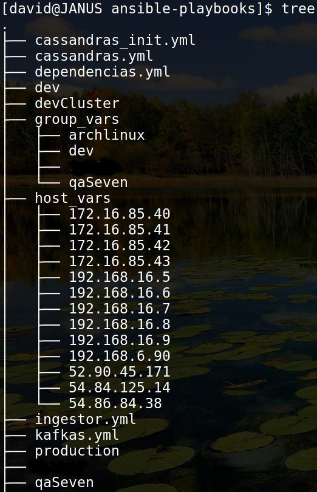

Ansible
Infraestructure Automation Tool

Exponentes:
Andrés Grosso
Carlos Toro
David Montaño
Agenda
Motivación
- ¿Qué es?
- ¿Para qué?
- ¿Quienes lo usan?
- Historia
- Ansible vs Saltstack vs Puppet vs Chef
Dependencias
- Python
- REPL
- pip
- Conceptos Básicos de Secure Shell
- ssh
- ssh-keygen
- ssh-agent
- ssh-add
Ansible
- Inventario
- Hechos / Facts
- Tareas
- Módulos
- Playbooks
- Variables
- Roles
- Plantillas
Caso Práctico
- Despliegue en Amazon: Docker + Zookeeper + Kafka + Jar + Spark + Cassandra
Conclusiones
Motivación
¿Qué es?
¿Para qué?
¿Quienes lo usan?
Historia
Ansible vs Saltstack vs Puppet vs Chef
Dependencias

python REPL


pip
Permite administrar librerías de Python
- listar librerías instaladas
pip list
pip search docker
pip
Permite administrar librerías de Python
- instalar dependencias
pip install docker-py
pip uninstall docker-py

ssh (cliente / servidor)
- Protocolo de red que permite intercambiar datos usando un canal seguro entre dos computadores.
- Basado en criptografía de llave pública:
- dsa (deprecated)
- ecdsa
- ed25519
- rsa
- Conociendo un usuario de la máquina remota podemos ingresar a ella.
[david@JANUS ~]$ ssh vashy@192.168.16.6
- dsa (deprecated)
- ecdsa
- ed25519
- rsa
[david@JANUS ~]$ ssh vashy@192.168.16.6
ssh-keygen
- Permite generar uno o varios pares de llaves públicas y privadas.
- Se recomienda asignarle una contraseña a la llave privada para que no baste con tenerla para ingresar a otras máquinas.
- Por defecto guarda las llaves en:
- ~/.ssh/id_rsa
- ~/.ssh/id_rsa.pub
[david@JANUS ~]$ ssh-keygen -t ed25519
ssh-agent
- Autocompleta las contraseñas cada vez que ssh las solicita en la terminal donde se ejecuta.
- Una vez se arranca el agente, se le pueden entregas llaves usando el comando ssh-add.
[david@JANUS ~]$ eval $(ssh-agent)
[david@JANUS ~]$ ssh-add
Enter passphrase for /home/david/.ssh/id_rsa:
Identity added: /home/david/.ssh/id_rsa (/home/david/.ssh/id_rsa)

Inventario
Hechos / Facts
Tareas
Módulos
Playbooks
Variables
Roles
Plantillas
Ejemplo: Docker + Zookeeper + Kafka + Jar + Spark + Cassandra
Estructura de Carpetas: Ansible Best Practices

Estructura de Carpetas: Ansible Best Practices

Estructura de Carpetas: Ansible Best Practices
Inventarios
- Desarrollo
- QA Seven (Amazon)
- QA Cliente
- Producción
Inventario Desarrollo
# file: dev
[local]
127.0.0.1
[damontic]
192.168.16.8
[rodrigo]
192.168.16.9
[oscar]
192.168.6.90
[vashy]
192.168.16.6
[natalia]
192.168.16.7
[archlinux:children]
damontic
[ubuntu:children]
rodrigo
oscar
vashy
natalia
[dev:children]
damontic
rodrigo
oscar
vashy
natalia
[dockers:children]
local
[zookeeper1:children]
local
[zookeeper2:children]
local
[kafka1:children]
local
[kafka2:children]
local
[sparkMaster1:children]
local
[sparkMaster2:children]
local
[sparkWorker1:children]
local
[sparkWorker2:children]
local
[cassandra1:children]
local
[cassandra2:children]
local
[cassandra3:children]
local
[cassandraClient:children]
local
[builder:children]
local
[zookeepers:children]
zookeeper1
zookeeper2
[kafkas:children]
kafka1
kafka2
[sparks:children]
sparkMaster1
sparkMaster2
sparkWorker1
sparkWorker2
[cassandras:children]
cassandra1
cassandra2
cassandra3
[ingestor1:children]
local
[ingestores:children]
ingestor1
Inventario QA Seven
file: qaSeven
[local]
127.0.0.1
[qa1]
52.90.45.171
[qa2]
54.84.125.14
[qa3]
54.86.84.38
[qaSeven:children]
qa1
qa2
qa3
[dockers:children]
qa1
qa2
qa3
[zookeeper1:children]
qa1
[zookeeper2:children]
qa2
[kafka1:children]
qa3
[kafka2:children]
qa1
[sparkMaster1:children]
qa2
[sparkMaster2:children]
qa3
[sparkWorker1:children]
qa1
[sparkWorker2:children]
qa2
[ingestor1:children]
qa3
[zookeepers:children]
zookeeper1
zookeeper2
[kafkas:children]
kafka1
kafka2
[sparks:children]
sparkMaster1
sparkMaster2
sparkWorker1
sparkWorker2
[ingestores:children]
ingestor1
Hechos / Facts
[david@JANUS ~] ansible -i dev -m setup vashy
Despliegue: playbook principal
# file: site.yml
- include: dependencias.yml
- include: zookeepers.yml
- include: kafkas.yml
- include: sparks.yml
- include: cassandras.yml
- include: ingestor.yml
Despliegue: playbook dependencias.yml
# file: dependencias.yml
- hosts: dockers
roles:
- {
role: dependencias_docker
}
Despliegue: playbook dependencias.yml
# file: roles/dependencias_docker/tasks/main.yml
- name: make sure python2-httplib2 is installed in Ubuntu
apt: name=python-httplib2 state=present
when: ansible_distribution == "Ubuntu"
- name: make sure python2-httplib2 is installed in Archlinux
pacman: name=python2-httplib2 state=present
when: ansible_distribution == "Archlinux"
- name: be sure docker is installed in Ubuntu
apt: name=docker-engine state=present
tags: docker
when: ansible_distribution == "Ubuntu"
- name: be sure docker is installed in Archlinux
pacman: name=docker state=present
tags: docker
when: ansible_distribution == "Archlinux"
- name: be sure dockerd is running and enabled in System Distributions
service: name=docker.service state=started
tags: docker
when: ansible_distribution == "Archlinux" or (ansible_distribution == "Ubuntu" and (ansible_distribution_version == "15.10" or ansible_distribution_version == "15.04")) or (ansible_distribution == "RedHat" and ansible_distribution_major_version == "7" )
- name: be sure dockerd is running and enabled in init based Distributions
service: name=docker state=started
tags: docker
when: ansible_distribution == "Ubuntu" and (ansible_distribution_version == "14.10" or ansible_distribution_version == "14.04" or ansible_distribution_version == "13.10" or ansible_distribution_version == "13.04") or (ansible_distribution == "RedHat" and ansible_distribution_major_version == "6" )
- name: create directory /opt/s4n
file: path="/opt/s4n" state=directory owner="{{ ansible_ssh_user }}" group="{{ ansible_ssh_user }}"
when: ansible_distribution == "RedHat"
- name: create directory /opt/s4n/facturacion
file: path="/opt/s4n/facturacion" state=directory owner="{{ ansible_ssh_user }}" group="{{ ansible_ssh_user }}"
when: ansible_distribution == "RedHat"
- name: create directory /opt/s4n/facturacion/docker_images
file: path="/opt/s4n/facturacion/docker_images" state=directory owner="{{ ansible_ssh_user }}" group="{{ ansible_ssh_user }}"
when: ansible_distribution == "RedHat"
- name: send infra-ach.tar.gz to RedHats
copy: src="{{ deploy_directory }}/infra-ach/infra-ach.tar.gz" dest="/opt/s4n/facturacion/infra-ach.tar.gz" owner="{{ ansible_ssh_user }}" group="{{ ansible_ssh_user }}" mode="a=r"
when: ansible_distribution == "RedHat"
- name: send alpine-image to RedHats
copy: src="{{ deploy_directory }}/docker-images/alpine.tar" dest="/opt/s4n/facturacion/docker_images/alpine.tar" owner="{{ ansible_ssh_user }}" group="{{ ansible_ssh_user }}" mode="a=r"
when: ansible_distribution == "RedHat"
- name: send alpine-oracle-jre to RedHats
copy: src="{{ deploy_directory }}/docker-images/ach_alpine-oracle-jre-8.tar" dest="/opt/s4n/facturacion/docker_images/ach_alpine-oracle-jre-8.tar" owner="{{ ansible_ssh_user }}" group="{{ ansible_ssh_user }}" mode="a=r"
when: ansible_distribution == "RedHat"
- name: verifies that alpine exists in RedHat
command: "docker images alpine"
register: alpineImageExists
when: ansible_distribution == "RedHat"
- name: docker import alpine to RedHats
command: "docker load -i=/opt/s4n/facturacion/docker_images/alpine.tar"
when: ansible_distribution == "RedHat" and alpineImageExists.stdout.find('alpine') == -1
- name: verifies that alpine-oracle-jre-8 exists in RedHat
command: "docker images ach/alpine-oracle-jre-8"
register: oracleImageExists
when: ansible_distribution == "RedHat"
- name: docker import alpine-oracle-jre to RedHats
command: "docker load -i=/opt/s4n/facturacion/docker_images/ach_alpine-oracle-jre-8.tar"
when: ansible_distribution == "RedHat" and oracleImageExists.stdout.find('oracle') == -1
- name: be sure docker alpine-oracle-jre-8 is available
docker_image: path={{ infra_ach_git_clone_dir }}/alpine-oracle-jre-8 name=ach/alpine-oracle-jre-8 state=present
tags: docker
Conclusiones
- Facilita el despliegue en cualquier Ambiente.
- (D'_')=D (Producción)
- Debemos aprender a no depender de Internet para las instalaciones.
- Hay más: ansible-galaxy